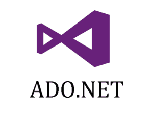
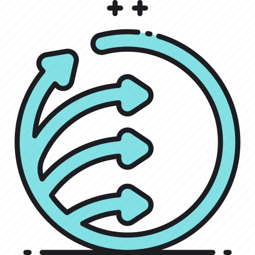
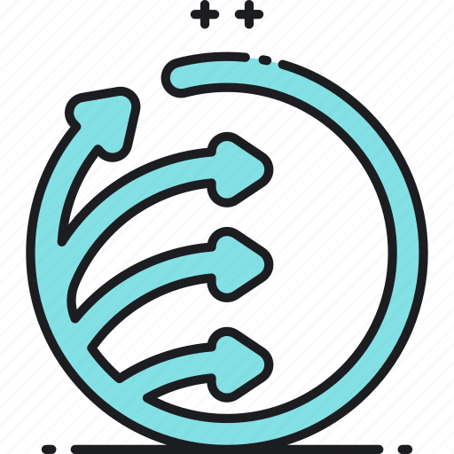
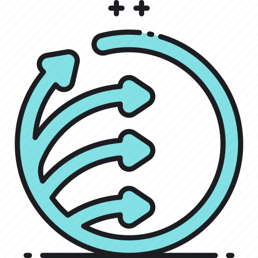

 

Ідея - стилі задаються окремо для різних умов, як-то розміри екрану, тип представлення (для друку, для перегляду, для проговорення). Розподіл здійснюється у стильових файлах шляхом медіа-запитів (медіа-селекторів). У той же час розмітка залишається постійною і не змінюється для різних умов.
